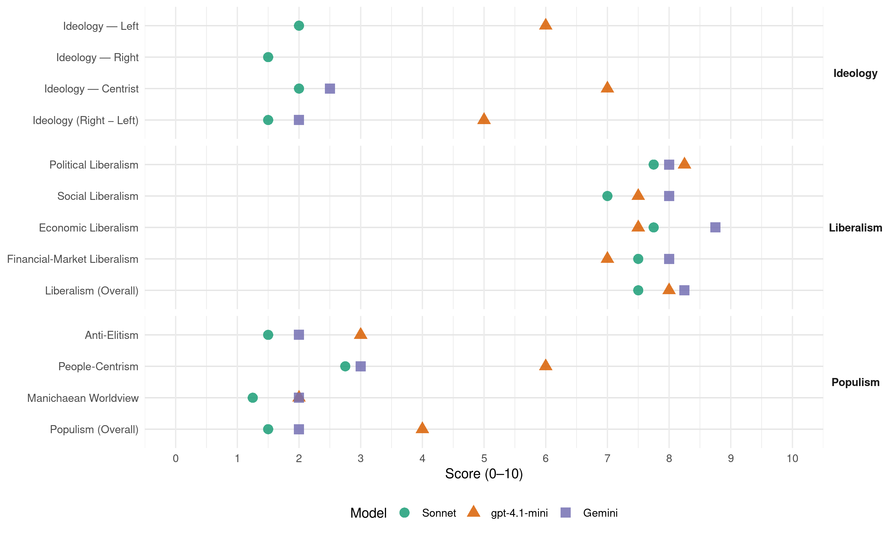

PàF (Portugal, 2015)
manifesto_id 35060_201510
Get full text: This site shows derived annotations and short verbatim quotes only. The full manifesto text is © Manifesto Project / WZB — obtain it via manifesto-project.wzb.eu using the manifesto_id above.
Headline scores
| Dimension | Sonnet | gpt-4.1-mini | Gemini |
|---|---|---|---|
| Populism (Overall) | 1.5 | 4.0 | 2.0 |
| Anti-Elitism | 1.5 | 3.0 | 2.0 |
| People-Centrism | 2.8 | 6.0 | 3.0 |
| Manichaean Worldview | 1.2 | 2.0 | 2.0 |
| Ideology (Right − Left) | 1.5 | 5.0 | 2.0 |
| Liberalism (Overall) | 7.5 | 8.0 | 8.2 |
| Political Liberalism | 7.8 | 8.2 | 8.0 |
| Social Liberalism | 7.0 | 7.5 | 8.0 |
| Economic Liberalism | 7.8 | 7.5 | 8.8 |
| Financial-Market Liberalism | 7.5 | 7.0 | 8.0 |
Evidence per dimension
Economic Liberalism
Gemini · score 8.0 · verified · chunk 1
“crescimento do investimento privado e na inovação”
Um modelo assente no crescimento do investimento privado e na inovação, nas exportações
Gemini · score 9.0 · verified · chunk 2
“promover a competitividade das empresas”
no mercado global em que hoje nos movemos, promover a competitividade das empresas é, pois, uma orientação essencial, pois só
Gemini · score 9.0 · verified · chunk 3
“privatização da CP Carga veio dar”
operadores de carga, com melhorias no ambiente concorrencial do sector. Mais recentemente, a privatização da CP Carga veio dar uma dinâmica acrescida ao mercado logístico.
Gemini · score 9.0 · verified · chunk 4
“mercado é a forma mais eficiente e racional”
papel da regulação É ponto assente e a história comprova-o que o mercado é a forma mais eficiente e racional de organização
gpt-4.1-mini · score 7.0 · verified · chunk 1
“crescimento do investimento privado e na inovação”
…Um modelo assente no crescimento do investimento privado e na inovação, nas exportações e nos bens transacionáveis e na reposição gradual do poder de compra. Um modelo em que a parcela de investimento público será seletiva e focada em pequenas e médias obras necessárias…
gpt-4.1-mini · score 8.0 · verified · chunk 2
“promover a competitividade das empresas é, pois, uma orientação essencial”
No mercado global em que hoje nos movemos, promover a competitividades das empresas é, pois, uma orientação essencial, pois só assim estas poderão explorar as novas oportunidades de negócios, dinamizar a sua atividade externa e conquistar, como tem vindo a suceder nos últimos anos, quotas de mercado, permitindonos aumentar as exportações para mais de 50% do PIB até 2020.
gpt-4.1-mini · score 8.0 · verified · chunk 3
“redução da taxa do IRC”
A Reforma do IRC, que foi aprovada no final de 2013 por mais de 85% dos deputados do Parlamento, veio dar um novo fôlego à economia portuguesa no panorama europeu: reforçou a competitividade fiscal, simplificou o imposto e criou melhores condições para promover o investimento e a criação de emprego. A previsibilidade fiscal nos próximos anos, em resultado do consenso alargado obtido, é um fator decisivo para a atração de investimento, para a criação de emprego e para o crescimento económico em Portugal Nestes termos, a redução da taxa de IRC estabelecida na respetiva reforma deverá continuar no horizonte compreendido entre 2016 e 2019.
gpt-4.1-mini · score 7.0 · verified · chunk 4
“mercado é a forma mais eficiente e racional de organização da economia”
É ponto assente e a história comprova-o que o mercado é a forma mais eficiente e racional de organização da economia, sobretudo num mundo global como o de hoje. As economias mais fortes, sólidas e perenes são fundadas em economias de mercado abertas, concorrenciais e competitivas, atraindo o investimento e fomentando a inovação.
Sonnet · score 7.0 · verified · chunk 1
“crescimento do investimento privado e na inovação”
Um modelo assente no crescimento do investimento privado e na inovação, nas exportações e nos bens transacionáveis
Sonnet · score 8.0 · verified · chunk 2
“liberalização do mercado da energia”
Consolidar o processo de liberalização do mercado da energia, simplificado o processo de mudança de comercializador
Sonnet · score 8.0 · verified · chunk 3
“privatização da CP Carga veio dar uma dinâmica”
Mais recentemente, a privatização da CP Carga veio dar uma dinâmica acrescida ao mercado logístico
Sonnet · score 8.0 · verified · chunk 4
“mercado é a forma mais eficiente”
o mercado é a forma mais eficiente e racional de organização da economia, sobretudo num mundo global como o de hoje
Financial-Market Liberalism
Gemini · score 8.0 · verified · chunk 1
“financia-se nos mercados internacionais a taxas de juro”
O País financia-se nos mercados internacionais a taxas de juro historicamente baixas
Gemini · score 8.0 · verified · chunk 2
“utilização do mercado de capitais”
através: a) Da criação de incentivos à utilização do mercado de capitais e obrigacionista pelas PME, proporcionando o
Gemini · score 8.0 · verified · chunk 3
“aumento de capital no mercado de capitais”
da “Infraestruturas de Portugal”, preferencialmente através de um aumento de capital no mercado de capitais, que mantenha a participação maioritária no controlo
Gemini · score 8.0 · verified · chunk 4
“completar a União Bancária, dando origem a um sistema bancário verdadeiramente integrado”
Estabilidade, o que requer, desde logo, que se completar a União Bancária, dando origem a um sistema bancário verdadeiramente integrado, que englobe um sistema comum
gpt-4.1-mini · score 7.0 · verified · chunk 1
“Portugal financia-se nos mercados internacionais a taxas de juro historicamente baixas”
…O País financia-se nos mercados internacionais a taxas de juro historicamente baixas (nalguns casos até negativas), o que permitiu, nomeadamente, o início dos reembolsos antecipados ao FMI; O défice público diminuiu em mais de 12,4 mil milhões de euros…
gpt-4.1-mini · score 7.0 · verified · chunk 2
“maximizar o apoio ao tecido empresarial, com particular destaque para as empresas exportadoras”
Garantir que a Caixa Geral de Depósitos, em linha com a sua carta de missão, maximize o apoio ao tecido empresarial, com particular destaque para as empresas exportadoras e produtoras de bens e serviços transacionáveis, bem como o empreendedorismo e a inovação, sobretudo nas PME; Tirar partido da Instituição Financeira de Desenvolvimento no financiamento de projetos em situações em que existem falhas de mercado, contribuindo ainda para a capitalização e para o financiamento de longo prazo da atividade produtiva.
gpt-4.1-mini · score 7.0 · verified · chunk 3
“Preparar uma Oferta Pública Inicial (OPI) da “Infraestruturas de Portugal””
Preparar uma Oferta Pública Inicial (OPI) da “Infraestruturas de Portugal”, preferencialmente através de um aumento de capital no mercado de capitais, que mantenha a participação maioritária no controlo do Estado e que permita, por um lado, uma maior racionalidade das decisões de investimento, atentos os compromissos qualitativos do Contrato de Concessão rodo e ferroviário e, por outro, a geração de liquidez que permita a recompra adicional de contratos de PPP com vantagem incremental na redução de pagamentos; Atribuir ao Grupo de Trabalho para as Infraestruturas de Elevado Valor Acrescentado (GT IEVA) o estatuto de Unidade de Acompanhamento da execução do PETI3+, garantindo um envolvimento permanente dos agentes económicos, das associações empresariais e dos utilizadores das infraestruturas.
gpt-4.1-mini · score 7.0 · verified · chunk 4
“revisão do regime de responsabilidade dos administradores de sociedades”
Promoveremos a revisão do regime de responsabilidade dos administradores de sociedades, bem como do regime das responsabilidades das auditoras, ROCs e TOCs. Promovereremos um regime de incompatibilidades dos auditores.
Sonnet · score 7.0 · verified · chunk 1
“financia-se nos mercados internacionais a taxas de juro historicamente baixas”
O País financia-se nos mercados internacionais a taxas de juro historicamente baixas (nalguns casos até negativas), o que permitiu, nomeadamente, o início dos reembolsos antecipados ao FMI
Sonnet · score 8.0 · verified · chunk 2
“mercados de capitais mais integrados”
melhorar os capitais próprios das empresas, promovendo ainda mercados de capitais mais integrados
Sonnet · score 7.0 · verified · chunk 3
“aumento de capital no mercado de capitais”
Preparar uma Oferta Pública Inicial (OPI) da ‘Infraestruturas de Portugal’, preferencialmente através de um aumento de capital no mercado de capitais, que mantenha a participação maioritária no controlo do Estado
Sonnet · score 8.0 · verified · chunk 4
“liberalização do mercado do gás”
Prosseguir a concretização da reforma, já aprovada, do setor dos combustíveis, visando o aumento da transparência e da competitividade, traduzida: … Na liberalização do mercado do gás
Political Liberalism
Gemini · score 7.0 · verified · chunk 1
“uma das maiores conquistas do regime democrático”
O SNS completou 35 anos de existência e constitui, em Portugal, uma das maiores conquistas do regime democrático.
Gemini · score 8.0 · verified · chunk 2
“conquistas do regime democrático”
existência e constitui, em Portugal, uma das maiores conquistas do regime democrático. A perceção dos cidadãos com a qualidade
Gemini · score 8.0 · verified · chunk 3
“assegura uma participação democrática, informada”
decisiva no fomento da transparência do Estado e na responsabilização dos decisores públicos, mas também assegura uma participação democrática, informada e ativa dos cidadãos
Gemini · score 9.0 · verified · chunk 4
“princípios e valores do Estado de Direito Democrático”
sentido da consolidação dos princípios e valores do Estado de Direito Democrático. De um Estado exclusivamente orientado
gpt-4.1-mini · score 8.0 · verified · chunk 1
“democracia, o Governo, o Parlamento”
…o défice orçamental ficará este ano abaixo de 3%, permitindo que Portugal, pela primeira vez em muitos anos, deixe de estar submetido ao procedimento por défice excessivo; O País financia-se nos mercados internacionais a taxas de juro historicamente baixas…
gpt-4.1-mini · score 8.0 · verified · chunk 2
“a perceção dos cidadãos com a qualidade do seu SNS é, consensualmente, das mais positivas”
O SNS completou 35 anos de existência e constitui, em Portugal, uma das maiores conquistas do regime democrático. A perceção dos cidadãos com a qualidade do seu SNS é, consensualmente, das mais positivas entre os diferentes serviços públicos assegurados pelo Estado.
gpt-4.1-mini · score 8.0 · verified · chunk 3
“a defesa da transparência do Estado e na responsabilização dos decisores públicos”
A «administração aberta» deve também constituir uma prioridade, uma vez que é decisiva no fomento da transparência na Administração Pública – divulgando a dívidas dos organismos públicos aos fornecedores; publicando a composição dos gabinetes ministeriais e a respetiva remuneração; comparando a Municipal. A «administração aberta» deve também constituir uma prioridade, uma vez que é decisiva no fomento da transparência do Estado e na responsabilização dos decisores públicos, mas também assegura uma participação democrática, informada e ativa dos cidadãos e da sociedade civil em geral.
gpt-4.1-mini · score 9.0 · verified · chunk 4
“consolidação dos princípios e valores do Estado de Direito Democrático”
Ao longo da última legislatura trabalhámos, consistentemente, no sentido da consolidação dos princípios e valores do Estado de Direito Democrático. De um Estado exclusivamente orientado, na sua ação, pela defesa do interesse público.
Sonnet · score 7.0 · verified · chunk 1
“SNS constitui uma das maiores conquistas do regime democrático”
O SNS completou 35 anos de existência e constitui, em Portugal, uma das maiores conquistas do regime democrático.
Sonnet · score 7.0 · verified · chunk 2
“maiores conquistas do regime democrático”
O SNS completou 35 anos de existência e constitui, em Portugal, uma das maiores conquistas do regime democrático
Sonnet · score 8.0 · verified · chunk 3
“participação democrática, informada e ativa dos cidadãos”
mas também assegura uma participação democrática, informada e ativa dos cidadãos e da sociedade civil em geral
Sonnet · score 9.0 · verified · chunk 4
“Estado de Direito Democrático”
Declaramos tolerância zero às graves ameaças ao Estado de Direito Democrático e, neste patamar, prosseguiremos no combate aos fenómenos transnacionais
Liberalism (Overall)
Gemini · score 8.0 · verified · chunk 1
“crescimento do investimento privado e na inovação”
Um modelo assente no crescimento do investimento privado e na inovação, nas exportações
Gemini · score 8.0 · verified · chunk 2
“promover a competitividade das empresas”
no mercado global em que hoje nos movemos, promover a competitividade das empresas é, pois, uma orientação essencial, pois só
Gemini · score 8.0 · verified · chunk 3
“privatização da CP Carga veio dar”
operadores de carga, com melhorias no ambiente concorrencial do sector. Mais recentemente, a privatização da CP Carga veio dar uma dinâmica acrescida ao mercado logístico.
Gemini · score 9.0 · verified · chunk 4
“mercado é a forma mais eficiente e racional”
papel da regulação É ponto assente e a história comprova-o que o mercado é a forma mais eficiente e racional de organização
gpt-4.1-mini · score 8.0 · verified · chunk 1
“combate às desigualdades sociais”
…QUEREMOS MAIS COMBATE ÀS DESIGUALDADES SOCIAIS. QUEREMOS MAIS QUALIDADE NA EDUCAÇÃO. QUEREMOS MAIS EQUILÍBRIO DEMOGRÁFICO. Nas próximas eleições legislativas pedimos, por isso, aos Portugueses que nos deem a oportunidade para continuar a transformar Portugal…
gpt-4.1-mini · score 8.0 · verified · chunk 2
“promover a competitividade das empresas é, pois, uma orientação essencial”
No mercado global em que hoje nos movemos, promover a competitividades das empresas é, pois, uma orientação essencial, pois só assim estas poderão explorar as novas oportunidades de negócios, dinamizar a sua atividade externa e conquistar, como tem vindo a suceder nos últimos anos, quotas de mercado, permitindonos aumentar as exportações para mais de 50% do PIB até 2020.
gpt-4.1-mini · score 8.0 · verified · chunk 3
“reforma do IRS e do IRC”
Mas, em paralelo com esta especial atenção ao combate à fraude, preocupámo-nos com a adoção de várias medidas tendo em vista o fortalecimento das garantias dos contribuintes. Por outro lado, logo que estabilizadas as contas públicas e iniciada a recuperação económica, começámos a trabalhar na alteração do paradigma fiscal – promoção de uma fiscalidade mais justa, mais equitativa, mais amiga das famílias, das empresas e do trabalho -, com destaque para as reformas do IRS e do IRC.
gpt-4.1-mini · score 8.0 · verified · chunk 4
“consolidação dos princípios e valores do Estado de Direito Democrático”
Ao longo da última legislatura trabalhámos, consistentemente, no sentido da consolidação dos princípios e valores do Estado de Direito Democrático. De um Estado exclusivamente orientado, na sua ação, pela defesa do interesse público.
Sonnet · score 7.0 · verified · chunk 1
“crescimento do investimento privado e na inovação”
Um modelo assente no crescimento do investimento privado e na inovação, nas exportações e nos bens transacionáveis e na reposição gradual do poder de compra.
Sonnet · score 7.0 · verified · chunk 2
“redução da taxa geral de IRC”
Prosseguir com a redução da taxa geral de IRC dos atuais 21% para 20% em 2016, mantendo-se o ritmo de redução de um ponto percentual por ano
Sonnet · score 8.0 · verified · chunk 3
“privatização da CP Carga veio dar uma dinâmica”
Mais recentemente, a privatização da CP Carga veio dar uma dinâmica acrescida ao mercado logístico
Sonnet · score 8.0 · verified · chunk 4
“economias de mercado abertas, concorrenciais e competitivas”
As economias mais fortes, sólidas e perenes são fundadas em economias de mercado abertas, concorrenciais e competitivas, atraindo o investimento e fomentando a inovação.
Anti-Elitism
Gemini · score 3.0 · verified · chunk 1
“incompetência e a leviandade de outros”
retirar Portugal da situação dramática a que a incompetência e a leviandade de outros nos conduzira.
Gemini · score 1.0 · verified · chunk 4
“agravou a crise de confiança dos cidadãos nas instituições”
resgate financeiro agravou a crise de confiança dos cidadãos nas instituições. Rigor, previsibilidade, transparência
gpt-4.1-mini · score 3.0 · verified · chunk 1
“a incompetência e a leviandade de outros nos conduzira”
…a verdadeira emergência nacional, a atual maioria foi chamada à responsabilidade de retirar Portugal da situação dramática a que a incompetência e a leviandade de outros nos conduzira. De repor Portugal no caminho do crescimento…
Sonnet · score 2.0 · verified · chunk 1
“a incompetência e a leviandade de outros nos conduzira”
a atual maioria foi chamada à responsabilidade de retirar Portugal da situação dramática a que a incompetência e a leviandade de outros nos conduzira
Sonnet · score 1.0 · verified · chunk 2
“voluntarismos estéreis, porque deslocados da realidade”
competitividade económica não se cria por decreto, nem surge como consequência de manifestações de voluntarismos estéreis, porque deslocados da realidade, antes dependendo
Sonnet · score 1.0 · verified · chunk 3
“enfrentando interesses e removendo rendas excessivas”
colocar as políticas do crescimento verde ao serviço da proteção ambiental, mas também da coesão territorial, da competitividade e da solidariedade, enfrentando interesses e removendo rendas excessivas, obstáculos e preconceitos
Sonnet · score 2.0 · verified · chunk 4
“retóricas, frequentemente populistas em ambos os sentidos”
Devemos também continuar a contribuir para evitar culturas ou retóricas, frequentemente populistas em ambos os sentidos, de fragmentação entre Norte e Sul.
Ideology — Centrist
Gemini · score 3.0 · verified · chunk 1
“mérito desta transformação é, antes do mais, dos Portugueses”
Sabemos que o mérito desta transformação é, antes do mais, dos Portugueses. Da sua resiliência
Gemini · score 2.0 · verified · chunk 4
“A política é património dos cidadãos”
gerador de confiança e credibilidade A política é património dos cidadãos e não pode resumir-se aos agentes
gpt-4.1-mini · score 7.0 · verified · chunk 1
“a atual maioria foi chamada à responsabilidade”
…a verdadeira emergência nacional, a atual maioria foi chamada à responsabilidade de retirar Portugal da situação dramática a que a incompetência e a leviandade de outros nos conduzira. De repor Portugal no caminho do crescimento…
Sonnet · score 3.0 · verified · chunk 1
“pedimos aos Portugueses que nos deem a oportunidade”
Nas próximas eleições legislativas pedimos, por isso, aos Portugueses que nos deem a oportunidade para continuar a transformar Portugal
Sonnet · score 1.0 · verified · chunk 2
“mais oportunidades para todos os Portugueses”
construção de uma sociedade mais confiante, mais próspera e com mais oportunidades para todos os Portugueses
Sonnet · score 2.0 · verified · chunk 3
“política de compromisso social e de valorização”
A nossa proposta é fiel à política de compromisso social e de valorização da concertação social, dando estabilidade às reformas feitas
Sonnet · score 2.0 · verified · chunk 4
“A política é património dos cidadãos”
A política é património dos cidadãos e não pode resumir-se aos agentes políticos que apenas exercem um mandato que é democraticamente delegado.
Ideology — Left
gpt-4.1-mini · score 6.0 · verified · chunk 1
“exigindo mais aos cidadãos com rendimentos mais elevados”
…preocupámo-nos com a repartição equitativa do esforço, exigindo mais aos cidadãos com rendimentos mais elevados ou uma contribuição especial a sectores económicos de especial relevância. Mas preocupámo-nos igualmente…
Sonnet · score 3.0 · verified · chunk 1
“combate às desigualdades sociais”
QUEREMOS MAIS COMBATE ÀS DESIGUALDADES SOCIAIS. QUEREMOS MAIS QUALIDADE NA EDUCAÇÃO.
Sonnet · score 1.0 · verified · chunk 2
“crescimento do investimento privado e na inovação”
modelo assente na redução dos níveis de dívida, tanto pública como privada, no crescimento do investimento privado e na inovação
Sonnet · score 2.0 · verified · chunk 3
“discriminação positiva em áreas como a Segurança”
Aprofundar o diálogo social nas empresas, através de disposições legais para a discriminação positiva em áreas como, por exemplo, a Segurança e Saúde no Trabalho
Sonnet · score 2.0 · verified · chunk 4
“igualdade real entre os portugueses”
compete ao Estado promover o bem-estar e a qualidade de vida do povo e a igualdade real entre os portugueses
Ideology (Right − Left)
Gemini · score 3.0 · verified · chunk 1
“mérito desta transformação é, antes do mais, dos Portugueses”
Sabemos que o mérito desta transformação é, antes do mais, dos Portugueses. Da sua resiliência
Gemini · score 1.0 · verified · chunk 4
“A política é património dos cidadãos”
gerador de confiança e credibilidade A política é património dos cidadãos e não pode resumir-se aos agentes
gpt-4.1-mini · score 5.0 · verified · chunk 1
“a atual maioria foi chamada à responsabilidade”
…a verdadeira emergência nacional, a atual maioria foi chamada à responsabilidade de retirar Portugal da situação dramática a que a incompetência e a leviandade de outros nos conduzira. De repor Portugal no caminho do crescimento…
Sonnet · score 2.0 · verified · chunk 1
“a incompetência e a leviandade de outros nos conduzira”
a atual maioria foi chamada à responsabilidade de retirar Portugal da situação dramática a que a incompetência e a leviandade de outros nos conduzira
Sonnet · score 1.0 · verified · chunk 2
“voluntarismos estéreis, porque deslocados da realidade”
competitividade económica não se cria por decreto, nem surge como consequência de manifestações de voluntarismos estéreis, porque deslocados da realidade
Sonnet · score 1.0 · verified · chunk 3
“enfrentando interesses e removendo rendas excessivas”
colocar as políticas do crescimento verde ao serviço da proteção ambiental, mas também da coesão territorial, da competitividade e da solidariedade, enfrentando interesses e removendo rendas excessivas
Sonnet · score 2.0 · verified · chunk 4
“retóricas, frequentemente populistas em ambos os sentidos”
Devemos também continuar a contribuir para evitar culturas ou retóricas, frequentemente populistas em ambos os sentidos, de fragmentação entre Norte e Sul.
Ideology — Right
Sonnet · score 1.0 · verified · chunk 1
“regresso dos nossos emigrantes”
Uma terceira dimensão em que importa agir tem que ver com o regresso dos nossos emigrantes.
Sonnet · score 2.0 · verified · chunk 2
“identidade nacional”
o mar é, antes do mais, um elemento central na definição da nossa própria identidade nacional
Sonnet · score 1.0 · verified · chunk 3
“Portugal não voltará a depender de intervenções externas”
Garantimos, assim, aos Portugueses, que o nosso País não voltará a depender de intervenções externas e não terá défices excessivos
Sonnet · score 2.0 · verified · chunk 4
“segurança energética da UE”
posicionar Portugal, através do terminal de Sines, como porta de entrada de Gás Natural Liquefeito (GNL) na UE, contribuindo para a segurança energética da UE
Manichaean Worldview
Gemini · score 2.0 · verified · chunk 1
“não é o tempo das promessas fáceis”
Com a consciência de que este não é o tempo das promessas fáceis, mas dos desafios corajosos.
gpt-4.1-mini · score 2.0 · verified · chunk 1
“a troika não teria saído do nosso País”
…Que, se tivéssemos hesitado, a troika não teria saído do nosso País. Os problemas dramáticos que o País enfrentava obrigaram a que aos Portugueses fossem pedidos sacrifícios indesejáveis mas, infelizmente…
Sonnet · score 2.0 · verified · chunk 1
“a incompetência e a leviandade de outros”
a situação dramática a que a incompetência e a leviandade de outros nos conduzira. De repor Portugal no caminho do crescimento
Sonnet · score 1.0 · verified · chunk 2
“dívida tarifária, herdada do Governo do PS”
praticamente eliminar a dívida tarifária, herdada do Governo do PS, até 2020
Sonnet · score 1.0 · verified · chunk 3
“experiências de irresponsabilidade financeira que conduzem”
os Portugueses devem defender-se de experiências de irresponsabilidade financeira que conduzem a consequências políticas, económicas e sociais extremamente graves
Sonnet · score 1.0 · verified · chunk 4
“tolerância zero às graves ameaças”
Declaramos tolerância zero às graves ameaças ao Estado de Direito Democrático e, neste patamar, prosseguiremos no combate aos fenómenos transnacionais
People-Centrism
Gemini · score 4.0 · verified · chunk 1
“mérito desta transformação é, antes do mais, dos Portugueses”
Sabemos que o mérito desta transformação é, antes do mais, dos Portugueses. Da sua resiliência
Gemini · score 2.0 · verified · chunk 4
“A política é património dos cidadãos”
gerador de confiança e credibilidade A política é património dos cidadãos e não pode resumir-se aos agentes
gpt-4.1-mini · score 6.0 · verified · chunk 1
“o mérito desta transformação é, antes do mais, dos Portugueses”
…Sabemos que o mérito desta transformação é, antes do mais, dos Portugueses. Da sua resiliência, do seu bom senso, da sua capacidade de vencer a adversidade. Mas também sabemos que, sem uma estratégia coerente…
Sonnet · score 4.0 · verified · chunk 1
“o mérito desta transformação é, antes do mais, dos Portugueses”
Sabemos que o mérito desta transformação é, antes do mais, dos Portugueses. Da sua resiliência, do seu bom senso, da sua capacidade de vencer a adversidade.
Sonnet · score 2.0 · verified · chunk 2
“todos os Portugueses”
construção de uma sociedade mais confiante, mais próspera e com mais oportunidades para todos os Portugueses
Sonnet · score 2.0 · verified · chunk 3
“chegando ao cidadão e encontrar a melhor forma”
Chegar ao cidadão e encontrar a melhor forma de o fazer foram prioridades desta legislatura. Em especial, temos hoje uma Administração Pública mais próxima
Sonnet · score 3.0 · verified · chunk 4
“A política é património dos cidadãos”
A política é património dos cidadãos e não pode resumir-se aos agentes políticos que apenas exercem um mandato que é democraticamente delegado.
Populism (Overall)
Gemini · score 3.0 · verified · chunk 1
“incompetência e a leviandade de outros”
retirar Portugal da situação dramática a que a incompetência e a leviandade de outros nos conduzira.
Gemini · score 1.0 · verified · chunk 4
“A política é património dos cidadãos”
gerador de confiança e credibilidade A política é património dos cidadãos e não pode resumir-se aos agentes
gpt-4.1-mini · score 4.0 · verified · chunk 1
“a incompetência e a leviandade de outros nos conduzira”
…a verdadeira emergência nacional, a atual maioria foi chamada à responsabilidade de retirar Portugal da situação dramática a que a incompetência e a leviandade de outros nos conduzira. De repor Portugal no caminho do crescimento…
Sonnet · score 2.0 · verified · chunk 1
“o mérito desta transformação é, antes do mais, dos Portugueses”
Sabemos que o mérito desta transformação é, antes do mais, dos Portugueses. Da sua resiliência, do seu bom senso
Sonnet · score 1.0 · verified · chunk 2
“voluntarismos estéreis, porque deslocados da realidade”
competitividade económica não se cria por decreto, nem surge como consequência de manifestações de voluntarismos estéreis, porque deslocados da realidade
Sonnet · score 1.0 · verified · chunk 3
“enfrentando interesses e removendo rendas excessivas”
colocar as políticas do crescimento verde ao serviço da proteção ambiental, mas também da coesão territorial, da competitividade e da solidariedade, enfrentando interesses e removendo rendas excessivas
Sonnet · score 2.0 · verified · chunk 4
“A política é património dos cidadãos”
A política é património dos cidadãos e não pode resumir-se aos agentes políticos que apenas exercem um mandato que é democraticamente delegado.
Social Liberalism